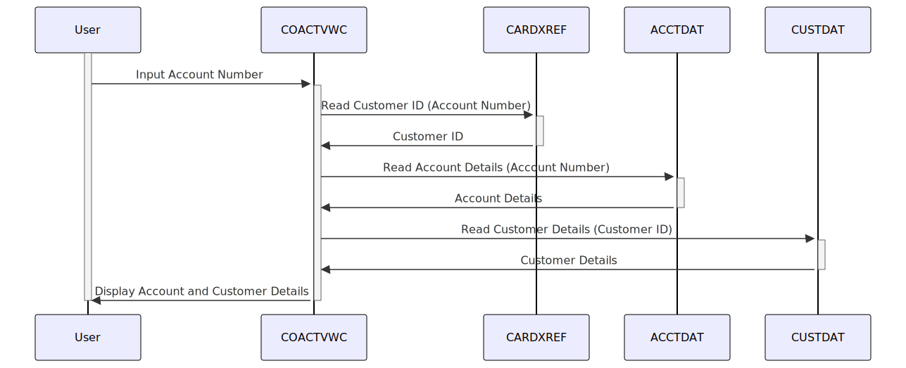

Gerado em: 1º de outubro de 2024
Título do Documento: Especificação do Programa de Visualização de Conta de Cartão de Crédito
Descrição Resumida:
Este programa, chamado “Visualização de Conta”, faz parte de um Sistema de Gerenciamento de Cartão de Crédito maior. Seu objetivo é fornecer uma maneira de visualizar informações detalhadas sobre uma conta de cartão de crédito específica. Isso é particularmente útil para representantes de atendimento ao cliente que precisam acessar rapidamente os detalhes da conta para auxiliar os clientes.
Histórias do Usuário:
Como representante de atendimento ao cliente, preciso visualizar os detalhes completos da conta de cartão de crédito de um cliente para que eu possa responder às suas perguntas com precisão e eficiência.
Épico Relacionado:
2 - Gestão de Contas
Requisitos Funcionais:
- Entrada do Número da Conta: O sistema deve permitir que o usuário insira o número da conta do cartão de crédito.
- Recuperação de Dados da Conta: O sistema deve recuperar as seguintes informações com base no número da conta fornecido:
- De CARDXREF (Arquivo de Referência Cruzada da Conta): ID do Cliente associado à conta.
- De CUSTDAT (Arquivo de Dados do Cliente): Detalhes do cliente, como nome, endereço, informações de contato, etc.
- De ACCTDAT (Arquivo de Dados da Conta): Detalhes específicos da conta, como saldo atual, limite de crédito, status da conta, etc.
- Exibição de Dados: O sistema deve exibir as informações recuperadas em um formato claro e organizado na tela.
- Validação de Entrada: O sistema deve validar o número da conta inserido para garantir que seja um formato válido e exista no sistema.
- Tratamento de Erros: O sistema deve lidar com números de conta inválidos normalmente e exibir mensagens de erro adequadas ao usuário.
- Navegação: O sistema deve fornecer opções para o usuário navegar para funcionalidades relacionadas, como visualizar o histórico de transações ou atualizar as informações da conta.
Requisitos Não Funcionais:
- Desempenho: O sistema deve recuperar e exibir informações da conta com tempo de resposta mínimo.
- Usabilidade: A interface do usuário deve ser intuitiva e fácil de usar, permitindo a entrada e revisão eficientes de dados.
- Segurança: O acesso à funcionalidade “Visualização de Conta” e às informações confidenciais da conta deve ser restrito apenas ao pessoal autorizado.
Critérios de Aceitação:
- O sistema recupera e exibe com sucesso todas as informações relevantes da conta quando um número de conta válido é fornecido.
- O sistema exibe mensagens de erro adequadas para números de conta inválidos ou inexistentes.
- A interface do usuário é fácil de navegar e fornece instruções claras para uso.
- O sistema atende aos requisitos de desempenho definidos para tempo de resposta.
- As medidas de controle de acesso estão em vigor para restringir o acesso apenas a usuários autorizados.
Melhorias de Código:
- Tratamento de Erros Centralizado: Implemente uma rotina de tratamento de erros centralizada para melhorar a manutenção do código e a consistência nos relatórios de erros.
- Modularidade do Código: Divida o programa em módulos menores e mais gerenciáveis para melhorar a legibilidade e a manutenção.
- Nomes de Variáveis Significativos: Use nomes de variáveis descritivos para melhorar a legibilidade e o entendimento do código.
- Comentários e Documentação: Adicione comentários claros e concisos para explicar a lógica complexa e documentar a funcionalidade do programa.
Melhorias de Segurança:
- Autenticação e Autorização: Implemente mecanismos robustos de autenticação para verificar as identidades dos usuários e autorizar o acesso com base em funções e privilégios.
- Criptografia de Dados: Criptografe dados confidenciais, como números de contas e informações do cliente, tanto em trânsito quanto em repouso, para proteger contra acesso não autorizado.
- Registro de Auditoria: Implemente o registro de auditoria para rastrear ações do usuário e eventos do sistema para auditoria de segurança e fins de conformidade.
Diagrama Conceitual:

–Made by “Smart Engineering” (by Compass.UOL)–